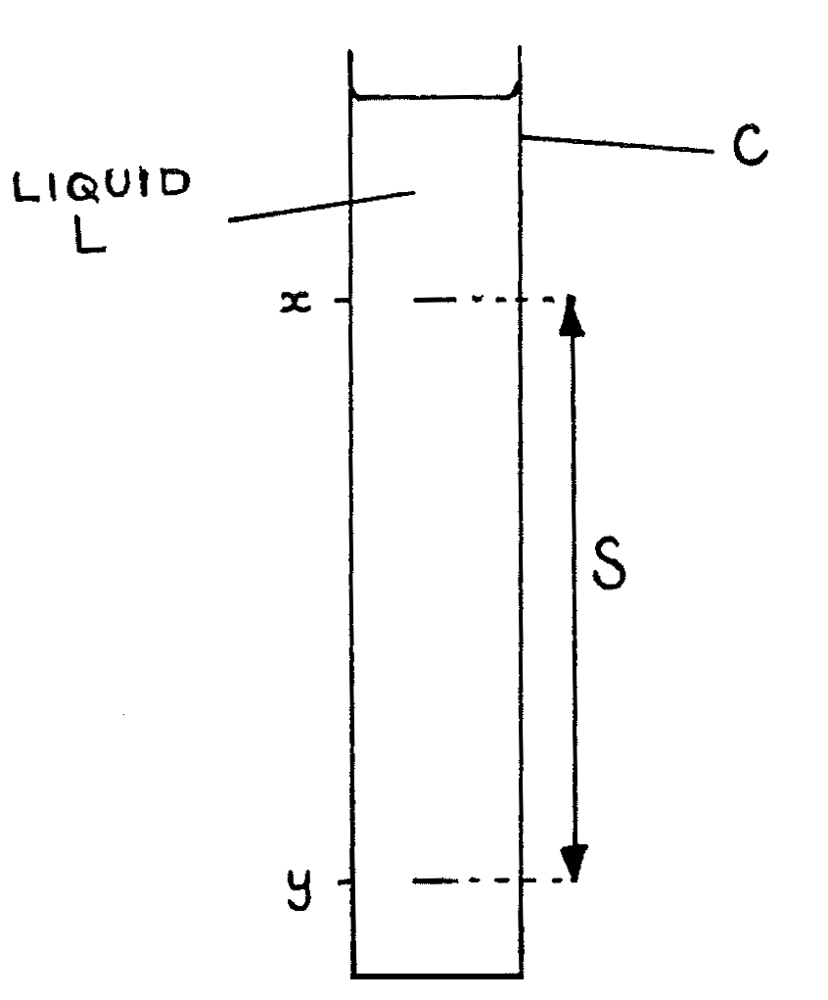

87-Q1: Viscosity of Oil¶
Time 1\(\frac{1}{2}\) hr.
Apparatus¶
Tall burette (250ml) or 500ml measuring cylinder; 4 steel ball bearings of different diameters (between 0.2 and 0.65cm); micrometer screw gauge; liquid L; ruler; stopwatch; strong magnet; forceps; thermometer (0-100°C); clamp and stand (if burette is used only); 2 small dishes; note giving values of \(\rho_1 \text{ and } \rho_2\); graph paper.
The aim of this experiment is to determine the viscosity of liquid L. Proceed as follows:
- Set up the apparatus as shown below with burette C nearly filled with liquid L.

Determine and write down the diameters of all the steel ball bearings using the micrometer screw gauge. Then wet all the balls with the liquid L by keeping them in a small dish containing the liquid. (8 marks)
By using the forceps, drop the balls one by one in the liquid. Measure and record the time taken by each ball to fall the distance \(S\) between points \(x\) and \(y\) in the liquid. The point \(x\) should be chosen such that the distance from the meniscus of the liquid to \(x\) is at least 7cm. The point \(y\) should be at least 20cm away from \(x\). Measure and record the distance \(S\) with a ruler. The bar magnet may be used to pull out the balls from the liquid L in the burette.
Make a table of results and tabulate the following: Average diameter (\(d\)) of each ball in cm, the square of the radius (\(r^2\)) of each ball in cm\(^2\), the average terminal velocity \(v\) of each ball in cms\(^{-1}\). Record the room temperature. (marks: \(t\) 8, \(s\) 2, \(r^2\) 2, \(v\) 4)
Plot a graph of \(r^2\) vs. \(v\) and draw the best line through the points. Calculate the slope of the graph. (marks 10, 3)
Determine the viscosity \(\eta\) in SI units of liquid L using the relation:
\[\eta = \frac{2g}{9} ( \rho_1 - \rho_2 ) \frac{r^2}{v}\]where \(\rho_1\) is the density of the steel balls, \(\rho_2\) is the density of liquid L, and g (= 9.8ms\(^{-2}\)) is the acceleration due to gravity. (6 marks)
Give the SI units of \(\eta\) and state any sources of errors in your experiment. (marks 2, 5)